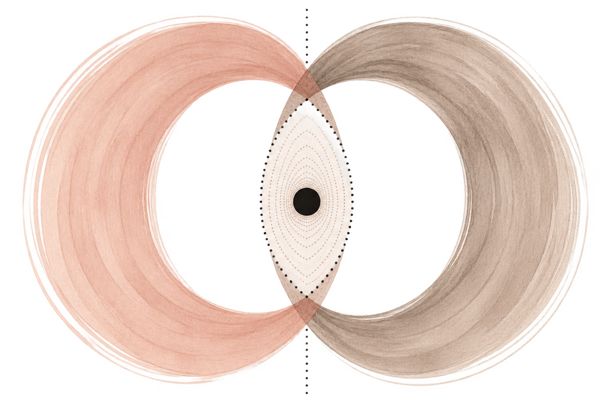
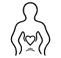

Implicit relational learning
Past experiences shape what we expect and how we protect.
A more relational world
is possible.
A relational process model for understanding what happens between people when protection takes over.
Love-Centered Therapy™ (LCT) is a dyadic process model that helps therapists work with the moment-to-moment cycle through which implicit relational learning, autonomic protection, and connection become organized between partners.

“The goal is not to eliminate protection.
The goal is to restore the capacity to choose how to relate.”
The model at a glance
Past experiences shape what we expect and how we protect.

The nervous system responds before we have words.
A meaning forms in the moment.
We do what we’ve learned to feel safe and connected.
Our protection triggers a response in our partner.
Together, a shared emotional and autonomic environment is created - and the cycle continues.
LCT brings together clinical observations from couples work with insights from attachment, trauma-informed and somatic psychology, interpersonal neurobiology, and decolonial scholarship.
Join the LCT community
Be the first to hear about upcoming trainings, workshops, research updates, and new resources. Join a growing community of therapists, researchers, and clinicians shaping the future of relational therapy.
Thank you for signing up.
Stay tuned for upcoming trainings, workshops, research updates, and new resources.